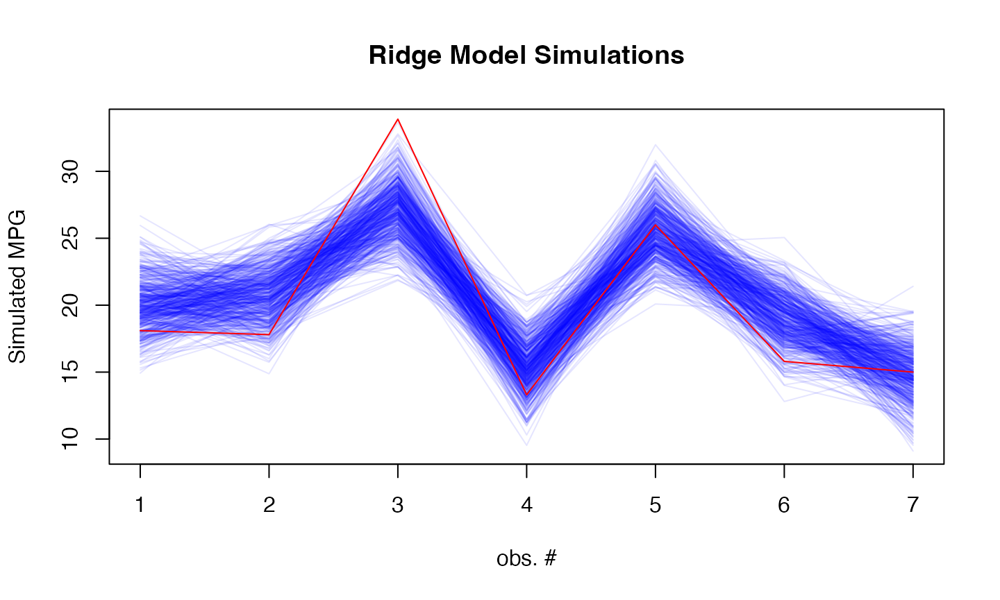
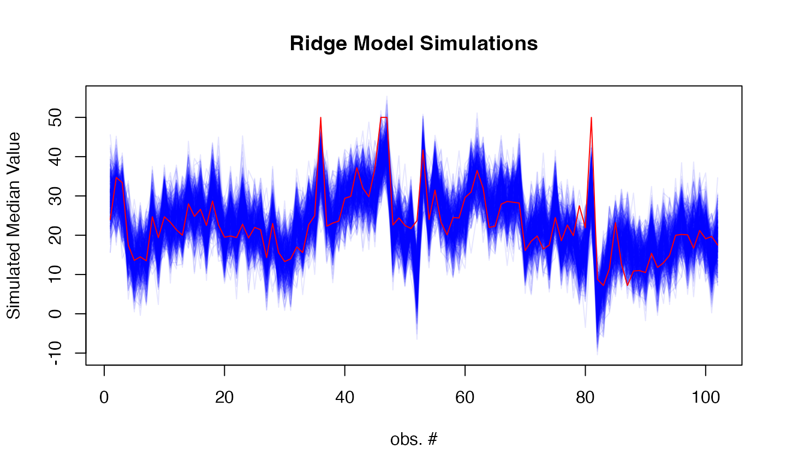
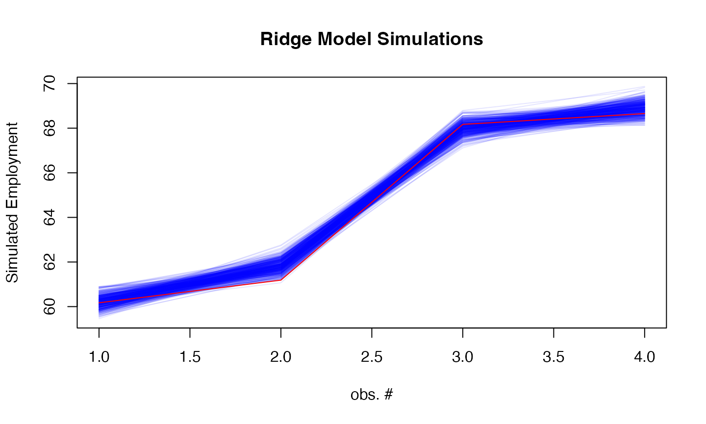
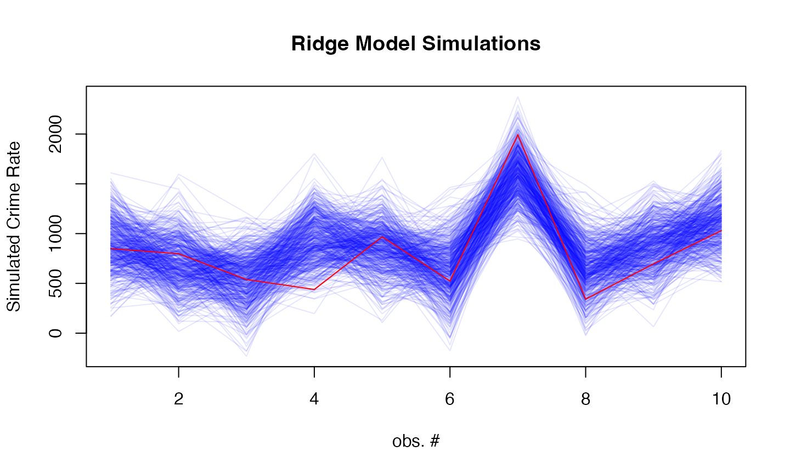
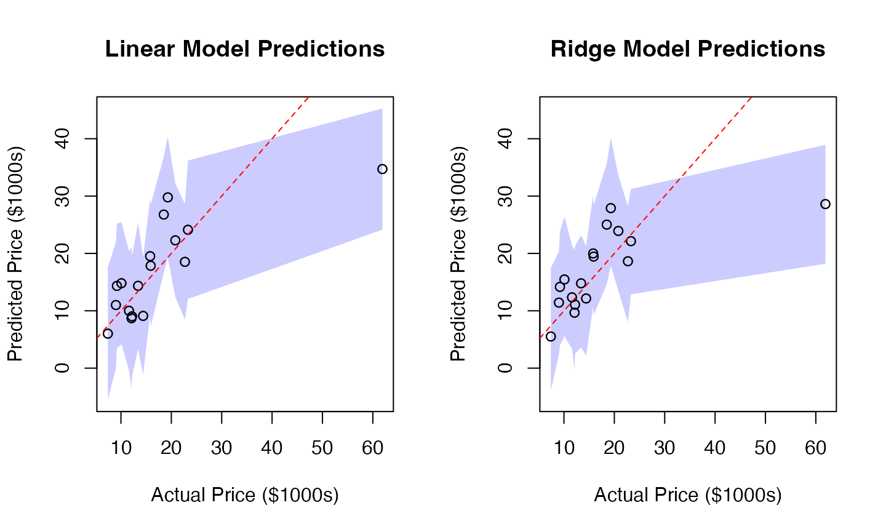

Ridge model
ridgemodel.Rmd
library(rvfl)Example 1: MPG Prediction (mtcars dataset)
Fit models
# Fit regular linear model
start <- proc.time()[3]
lm_model <- lm(mpg ~ ., data = train_data)
print(proc.time()[3] - start)## elapsed
## 0.012##
## Call:
## lm(formula = mpg ~ ., data = train_data)
##
## Residuals:
## Min 1Q Median 3Q Max
## -3.5211 -0.9792 -0.0324 1.1808 4.9814
##
## Coefficients:
## Estimate Std. Error t value Pr(>|t|)
## (Intercept) -5.054416 25.456900 -0.199 0.8455
## cyl 0.695392 1.396506 0.498 0.6262
## disp 0.005254 0.017342 0.303 0.7664
## hp -0.007610 0.027723 -0.274 0.7877
## drat 4.128157 2.724353 1.515 0.1520
## wt -1.621396 2.139071 -0.758 0.4610
## qsec 0.064356 0.932144 0.069 0.9459
## vs 0.138716 3.421183 0.041 0.9682
## am -0.498476 2.956568 -0.169 0.8685
## gear 4.402648 2.287816 1.924 0.0749 .
## carb -1.999389 1.299580 -1.538 0.1462
## ---
## Signif. codes: 0 '***' 0.001 '**' 0.01 '*' 0.05 '.' 0.1 ' ' 1
##
## Residual standard error: 2.464 on 14 degrees of freedom
## Multiple R-squared: 0.8938, Adjusted R-squared: 0.818
## F-statistic: 11.79 on 10 and 14 DF, p-value: 3.4e-05## 2.5 % 97.5 %
## (Intercept) -59.65403559 49.54520296
## cyl -2.29981561 3.69060001
## disp -0.03194096 0.04244882
## hp -0.06707095 0.05185084
## drat -1.71500030 9.97131342
## wt -6.20924769 2.96645550
## qsec -1.93489537 2.06360651
## vs -7.19899241 7.47642359
## am -6.83968216 5.84273112
## gear -0.50422869 9.30952400
## carb -4.78671119 0.78793282
# Fit calibrated model
start <- proc.time()[3]
ridge_model <- rvfl::calibmodel(lambda=10**seq(-10, 10, length.out=100), x = as.matrix(train_data[,-1]), y = train_data$mpg)
print(proc.time()[3] - start)## elapsed
## 0.027## $model_summary
##
## Call:
## engine(formula = y ~ . - 1, data = df_train)
##
## Residuals:
## Min 1Q Median 3Q Max
## -3.5715 -1.6454 -0.6596 1.9582 5.6548
##
## Coefficients:
## Estimate Std. Error t value Pr(>|t|)
## cyl -0.4956 0.7586 -0.653 0.524
## disp -0.5709 0.7473 -0.764 0.458
## hp -0.6475 0.7508 -0.862 0.403
## drat 0.8272 0.6951 1.190 0.254
## wt -0.7784 0.7239 -1.075 0.300
## qsec 0.2927 0.7384 0.396 0.698
## vs 0.4345 0.7133 0.609 0.552
## am 0.7154 0.6849 1.045 0.314
## gear 0.4152 0.7179 0.578 0.572
## carb -0.7023 0.6358 -1.105 0.288
##
## Residual standard error: 2.99 on 14 degrees of freedom
## Multiple R-squared: 0.7422, Adjusted R-squared: 0.5581
## F-statistic: 4.031 on 10 and 14 DF, p-value: 0.009055
##
##
## $derivatives_summary
## Effect.mean of x Std.Error p.value CI.lower CI.upper
## cyl -0.272562363 1.251420e-11 1.261186e-223 -0.272562363 -0.272562363
## disp -0.004417317 1.602004e-11 5.557056e-180 -0.004417317 -0.004417317
## hp -0.011728958 1.766407e-11 9.254360e-189 -0.011728958 -0.011728958
## drat 1.594838830 1.851980e-11 2.340861e-237 1.594838830 1.594838830
## wt -0.748782818 1.224970e-11 6.207613e-234 -0.748782819 -0.748782818
## qsec 0.188050094 3.700743e-12 4.350927e-232 0.188050094 0.188050094
## vs 0.857626338 1.185444e-11 1.287167e-235 0.857626338 0.857626338
## am 1.460396700 6.124848e-12 1.572499e-247 1.460396700 1.460396700
## gear 0.638082724 1.510165e-11 3.031228e-230 0.638082724 0.638082724
## carb -0.532426743 1.504239e-11 1.780484e-228 -0.532426743 -0.532426743Compare predictions
results <- data.frame(
Actual = mtcars[-train_idx, ]$mpg,
LM_Pred = lm_pred[,"fit"],
LM_Lower = lm_pred[,"lwr"],
LM_Upper = lm_pred[,"upr"],
Ridge_Pred = ridge_pred[,"fit"],
Ridge_Lower = ridge_pred[,"lwr"],
Ridge_Upper = ridge_pred[,"upr"]
)
# Print results
print("Prediction Intervals Comparison:")## [1] "Prediction Intervals Comparison:"## Actual LM_Pred LM_Lower LM_Upper Ridge_Pred Ridge_Lower
## Valiant 18.1 17.93324 10.149847 25.71663 19.88520 16.55519
## Merc 280C 17.8 20.63530 13.636618 27.63398 20.95955 16.97131
## Toyota Corolla 33.9 28.58373 22.379666 34.78779 27.44891 23.92696
## Camaro Z28 13.3 15.85710 8.140858 23.57335 15.19122 11.43924
## Porsche 914-2 26.0 31.07535 18.988702 43.16201 25.48120 22.20837
## Ford Pantera L 15.8 27.07516 14.930150 39.22016 19.34804 15.02970
## Ridge_Upper
## Valiant 23.95417
## Merc 280C 24.56564
## Toyota Corolla 31.76149
## Camaro Z28 18.52793
## Porsche 914-2 29.47377
## Ford Pantera L 22.42565
# Calculate coverage and Winkler scores
lm_coverage <- mean(mtcars[-train_idx, ]$mpg >= results$LM_Lower &
mtcars[-train_idx, ]$mpg <= results$LM_Upper)
ridge_coverage <- mean(mtcars[-train_idx, ]$mpg >= results$Ridge_Lower &
mtcars[-train_idx, ]$mpg <= results$Ridge_Upper)
lm_winkler <- misc::winkler_score(mtcars[-train_idx, ]$mpg, results$LM_Lower, results$LM_Upper)
ridge_winkler <- misc::winkler_score(mtcars[-train_idx, ]$mpg, results$Ridge_Lower, results$Ridge_Upper)
print(sprintf("\nPrediction interval metrics:"))## [1] "\nPrediction interval metrics:"
print(sprintf("Linear Model: %.1f%% coverage, %.3f Winkler score",
100 * lm_coverage, mean(lm_winkler)))## [1] "Linear Model: 100.0% coverage, 18.226 Winkler score"
print(sprintf("Calibrated Model: %.1f%% coverage, %.3f Winkler score",
100 * ridge_coverage, mean(ridge_winkler)))## [1] "Calibrated Model: 85.7% coverage, 19.732 Winkler score"
# Set common y-axis limits for both plots
y_limits <- range(c(results$LM_Lower, results$LM_Upper,
results$Ridge_Lower, results$Ridge_Upper))
# Plot prediction intervals
par(mfrow=c(1,2))
# Linear Model Plot
plot(results$Actual, results$LM_Pred,
main="Linear Model Predictions",
xlab="Actual MPG", ylab="Predicted MPG",
ylim=y_limits)
# Add shaded prediction intervals
x_ordered <- order(results$Actual)
polygon(c(results$Actual[x_ordered], rev(results$Actual[x_ordered])),
c(results$LM_Lower[x_ordered], rev(results$LM_Upper[x_ordered])),
col=rgb(0, 0, 1, 0.2), border=NA)
points(results$Actual, results$LM_Pred) # Replot points over shading
abline(0, 1, col="red", lty=2) # Add diagonal line
# Ridge Model Plot
plot(results$Actual, results$Ridge_Pred,
main="Ridge Model Predictions",
xlab="Actual MPG", ylab="Predicted MPG",
ylim=y_limits)
# Add shaded prediction intervals
polygon(c(results$Actual[x_ordered], rev(results$Actual[x_ordered])),
c(results$Ridge_Lower[x_ordered], rev(results$Ridge_Upper[x_ordered])),
col=rgb(0, 0, 1, 0.2), border=NA)
points(results$Actual, results$Ridge_Pred) # Replot points over shading
abline(0, 1, col="red", lty=2) # Add diagonal line
# Add simulation plot
par(mfrow=c(1,1))
# Generate 100 simulations
sims <- simulate(ridge_model, newdata = as.matrix(test_data), nsim = 500)
# Plot simulations
matplot(sims, type = "l",
col = rgb(0, 0, 1, 0.1), lty = 1,
xlab = "obs. #", ylab = "Simulated MPG",
main = "Ridge Model Simulations")
lines(mtcars[-train_idx, ]$mpg, col = "red") 
Example 2: Boston Housing Price Prediction
Fit models
# Fit regular linear model
start <- proc.time()[3]
lm_model <- lm(medv ~ ., data = train_data)
print(proc.time()[3] - start)## elapsed
## 0.009##
## Call:
## lm(formula = medv ~ ., data = train_data)
##
## Residuals:
## Min 1Q Median 3Q Max
## -15.220 -2.757 -0.494 1.863 26.961
##
## Coefficients:
## Estimate Std. Error t value Pr(>|t|)
## (Intercept) 35.832339 5.763210 6.217 1.30e-09 ***
## crim -0.095389 0.034717 -2.748 0.006282 **
## zn 0.042689 0.016086 2.654 0.008283 **
## indus -0.033013 0.073521 -0.449 0.653657
## chas 2.506064 0.939731 2.667 0.007977 **
## nox -17.521010 4.237379 -4.135 4.35e-05 ***
## rm 3.966727 0.477640 8.305 1.66e-15 ***
## age 0.006479 0.014922 0.434 0.664410
## dis -1.463187 0.232348 -6.297 8.17e-10 ***
## rad 0.253984 0.075379 3.369 0.000828 ***
## tax -0.009853 0.004350 -2.265 0.024068 *
## ptratio -1.002914 0.147016 -6.822 3.44e-11 ***
## black 0.008723 0.002984 2.923 0.003664 **
## lstat -0.501984 0.057704 -8.699 < 2e-16 ***
## ---
## Signif. codes: 0 '***' 0.001 '**' 0.01 '*' 0.05 '.' 0.1 ' ' 1
##
## Residual standard error: 4.835 on 390 degrees of freedom
## Multiple R-squared: 0.7403, Adjusted R-squared: 0.7316
## F-statistic: 85.51 on 13 and 390 DF, p-value: < 2.2e-16## 2.5 % 97.5 %
## (Intercept) 24.50149090 47.16318623
## crim -0.16364441 -0.02713269
## zn 0.01106383 0.07431451
## indus -0.17755967 0.11153316
## chas 0.65849254 4.35363615
## nox -25.85197459 -9.19004505
## rm 3.02765548 4.90579898
## age -0.02285933 0.03581667
## dis -1.91999833 -1.00637601
## rad 0.10578379 0.40218383
## tax -0.01840515 -0.00129986
## ptratio -1.29195676 -0.71387117
## black 0.00285660 0.01458927
## lstat -0.61543411 -0.38853422
# Fit calibrated model
start <- proc.time()[3]
ridge_model <- rvfl::calibmodel(lambda=10**seq(-10, 10, length.out=100), x = as.matrix(train_data[,-14]), y = train_data$medv)
print(proc.time()[3] - start)## elapsed
## 0.059##
## Call:
## engine(formula = y ~ . - 1, data = df_train)
##
## Residuals:
## Min 1Q Median 3Q Max
## -10.8939 -2.9240 -0.5968 1.9927 26.0705
##
## Coefficients:
## Estimate Std. Error t value Pr(>|t|)
## crim -1.0059 0.5000 -2.012 0.045575 *
## zn 0.8264 0.4991 1.656 0.099298 .
## indus 0.1430 0.7574 0.189 0.850401
## chas 0.6056 0.3571 1.696 0.091434 .
## nox -1.8962 0.6871 -2.760 0.006311 **
## rm 2.7488 0.4796 5.731 3.56e-08 ***
## age 0.7043 0.6016 1.171 0.243052
## dis -2.1701 0.6775 -3.203 0.001579 **
## rad 1.9496 0.9275 2.102 0.036785 *
## tax -1.3630 1.0753 -1.268 0.206424
## ptratio -1.7350 0.4696 -3.694 0.000283 ***
## black 0.7928 0.4409 1.798 0.073660 .
## lstat -3.9392 0.5793 -6.800 1.15e-10 ***
## ---
## Signif. codes: 0 '***' 0.001 '**' 0.01 '*' 0.05 '.' 0.1 ' ' 1
##
## Residual standard error: 5.065 on 203 degrees of freedom
## Multiple R-squared: 0.6897, Adjusted R-squared: 0.6698
## F-statistic: 34.71 on 13 and 203 DF, p-value: < 2.2e-16## 2.5 % 97.5 %
## crim -1.99177817 -0.01998703
## zn -0.15763891 1.81035788
## indus -1.35036253 1.63643261
## chas -0.09847995 1.30961784
## nox -3.25090385 -0.54151835
## rm 1.80318002 3.69448343
## age -0.48180987 1.89044500
## dis -3.50598666 -0.83426263
## rad 0.12085104 3.77840523
## tax -3.48320226 0.75724684
## ptratio -2.66095278 -0.80898637
## black -0.07659270 1.66224338
## lstat -5.08143525 -2.79693765
#print(simulate(ridge_model, newdata = test_data))Make predictions and compare
lm_pred <- predict(lm_model, newdata = test_data, interval = "prediction")
ridge_pred <- predict(ridge_model, newdata = as.matrix(test_data), method = "gaussian")
results <- data.frame(
Actual = Boston[-train_idx, ]$medv,
LM_Pred = lm_pred[,"fit"],
LM_Lower = lm_pred[,"lwr"],
LM_Upper = lm_pred[,"upr"],
Ridge_Pred = ridge_pred[,"fit"],
Ridge_Lower = ridge_pred[,"lwr"],
Ridge_Upper = ridge_pred[,"upr"]
)
# Print results
print("Prediction Intervals Comparison:")## [1] "Prediction Intervals Comparison:"## Actual LM_Pred LM_Lower LM_Upper Ridge_Pred Ridge_Lower Ridge_Upper
## 1 24.0 30.57209 20.958399 40.18579 29.44374 20.432895 38.62332
## 3 34.7 30.68339 21.107377 40.25940 30.84550 20.892099 38.71279
## 4 33.4 28.70511 19.107688 38.30253 28.97805 20.359013 37.89275
## 18 17.5 17.06191 7.487523 26.63630 17.65891 9.754859 27.10033
## 21 13.6 12.85420 3.239688 22.46872 13.53186 4.287351 22.56573
## 24 14.5 14.14956 4.535627 23.76348 15.32131 6.096803 24.66801
# Calculate coverage and Winkler scores
lm_coverage <- mean(Boston[-train_idx, ]$medv >= results$LM_Lower &
Boston[-train_idx, ]$medv <= results$LM_Upper)
ridge_coverage <- mean(Boston[-train_idx, ]$medv >= results$Ridge_Lower &
Boston[-train_idx, ]$medv <= results$Ridge_Upper)
lm_winkler <- misc::winkler_score(Boston[-train_idx, ]$medv, results$LM_Lower, results$LM_Upper)
ridge_winkler <- misc::winkler_score(Boston[-train_idx, ]$medv, results$Ridge_Lower, results$Ridge_Upper)
print(sprintf("\nPrediction interval metrics:"))## [1] "\nPrediction interval metrics:"
print(sprintf("Linear Model: %.1f%% coverage, %.3f Winkler score",
100 * lm_coverage, mean(lm_winkler)))## [1] "Linear Model: 95.1% coverage, 26.711 Winkler score"
print(sprintf("Calibrated Model: %.1f%% coverage, %.3f Winkler score",
100 * ridge_coverage, mean(ridge_winkler)))## [1] "Calibrated Model: 94.1% coverage, 29.029 Winkler score"
# Visualization
# Set common y-axis limits for both plots
y_limits <- range(c(results$LM_Lower, results$LM_Upper,
results$Ridge_Lower, results$Ridge_Upper))
par(mfrow=c(1,2))
# Linear Model Plot
plot(results$Actual, results$LM_Pred,
main="Linear Model Predictions",
xlab="Actual Median Value", ylab="Predicted Median Value",
ylim=y_limits)
x_ordered <- order(results$Actual)
polygon(c(results$Actual[x_ordered], rev(results$Actual[x_ordered])),
c(results$LM_Lower[x_ordered], rev(results$LM_Upper[x_ordered])),
col=rgb(0, 0, 1, 0.2), border=NA)
points(results$Actual, results$LM_Pred)
abline(0, 1, col="red", lty=2)
# Ridge Model Plot
plot(results$Actual, results$Ridge_Pred,
main="Ridge Model Predictions",
xlab="Actual Median Value", ylab="Predicted Median Value",
ylim=y_limits)
polygon(c(results$Actual[x_ordered], rev(results$Actual[x_ordered])),
c(results$Ridge_Lower[x_ordered], rev(results$Ridge_Upper[x_ordered])),
col=rgb(0, 0, 1, 0.2), border=NA)
points(results$Actual, results$Ridge_Pred)
abline(0, 1, col="red", lty=2)
# Add simulation plot
par(mfrow=c(1,1))
sims <- simulate(ridge_model, newdata = as.matrix(test_data), nsim = 500)
matplot(sims, type = "l",
col = rgb(0, 0, 1, 0.1), lty = 1,
xlab = "obs. #", ylab = "Simulated Median Value",
main = "Ridge Model Simulations")
lines(Boston[-train_idx, ]$medv, col = "red")
Example 3: Economic Indicators (Longley dataset)
Fit models
# Fit regular linear model
start <- proc.time()[3]
lm_model <- lm(Employed ~ ., data = train_data)
print(proc.time()[3] - start)## elapsed
## 0.008##
## Call:
## lm(formula = Employed ~ ., data = train_data)
##
## Residuals:
## 1948 1951 1962 1960 1953 1958 1956 1947
## -0.15209 0.23935 -0.15902 -0.15702 0.04017 -0.11637 0.35418 0.07762
## 1954 1955 1952 1961
## -0.03138 -0.23164 -0.18207 0.31828
##
## Coefficients:
## Estimate Std. Error t value Pr(>|t|)
## (Intercept) -3.314e+03 9.930e+02 -3.338 0.02061 *
## GNP.deflator -7.877e-02 1.033e-01 -0.763 0.48016
## GNP -6.186e-03 4.032e-02 -0.153 0.88407
## Unemployed -1.578e-02 6.060e-03 -2.604 0.04802 *
## Armed.Forces -1.074e-02 2.478e-03 -4.336 0.00745 **
## Population -3.256e-01 2.798e-01 -1.164 0.29697
## Year 1.758e+00 5.066e-01 3.470 0.01784 *
## ---
## Signif. codes: 0 '***' 0.001 '**' 0.01 '*' 0.05 '.' 0.1 ' ' 1
##
## Residual standard error: 0.3053 on 5 degrees of freedom
## Multiple R-squared: 0.9962, Adjusted R-squared: 0.9916
## F-statistic: 216.2 on 6 and 5 DF, p-value: 7.153e-06## 2.5 % 97.5 %
## (Intercept) -5.866601e+03 -7.615995e+02
## GNP.deflator -3.443182e-01 1.867776e-01
## GNP -1.098296e-01 9.745798e-02
## Unemployed -3.135588e-02 -2.021522e-04
## Armed.Forces -1.711223e-02 -4.374897e-03
## Population -1.044745e+00 3.935168e-01
## Year 4.557539e-01 3.060217e+00
# Fit calibrated model
start <- proc.time()[3]
ridge_model <- rvfl::calibmodel(lambda=10**seq(-10, 10, length.out=100), x = as.matrix(train_data[,-7]), y = train_data$Employed)
print(proc.time()[3] - start)## elapsed
## 0.014##
## Call:
## engine(formula = y ~ . - 1, data = df_train)
##
## Residuals:
## Min 1Q Median 3Q Max
## -0.46493 -0.07890 0.03725 0.08371 0.52111
##
## Coefficients:
## Estimate Std. Error t value Pr(>|t|)
## GNP.deflator -1.2793 0.9873 -1.296 0.23118
## GNP 0.3637 2.9849 0.122 0.90603
## Unemployed -1.5944 0.6028 -2.645 0.02949 *
## Armed.Forces -0.6449 0.1501 -4.297 0.00263 **
## Population -1.0203 2.2167 -0.460 0.65758
## Year 6.7454 2.0487 3.292 0.01098 *
## ---
## Signif. codes: 0 '***' 0.001 '**' 0.01 '*' 0.05 '.' 0.1 ' ' 1
##
## Residual standard error: 0.2715 on 8 degrees of freedom
## Multiple R-squared: 0.9934, Adjusted R-squared: 0.9885
## F-statistic: 201.8 on 6 and 8 DF, p-value: 2.755e-08## 2.5 % 97.5 %
## GNP.deflator -3.5559317 0.9973284
## GNP -6.5194414 7.2468205
## Unemployed -2.9845200 -0.2042948
## Armed.Forces -0.9909028 -0.2988122
## Population -6.1320605 4.0915301
## Year 2.0209849 11.4697499
#print(simulate(ridge_model, newdata = test_data))Make predictions and compare
lm_pred <- predict(lm_model, newdata = test_data, interval = "prediction")
ridge_pred <- predict(ridge_model, newdata = as.matrix(test_data), method = "gaussian")
results <- data.frame(
Actual = longley[-train_idx, ]$Employed,
LM_Pred = lm_pred[,"fit"],
LM_Lower = lm_pred[,"lwr"],
LM_Upper = lm_pred[,"upr"],
Ridge_Pred = ridge_pred[,"fit"],
Ridge_Lower = ridge_pred[,"lwr"],
Ridge_Upper = ridge_pred[,"upr"]
)
# Print results
print("Prediction Intervals Comparison:")## [1] "Prediction Intervals Comparison:"## Actual LM_Pred LM_Lower LM_Upper Ridge_Pred Ridge_Lower Ridge_Upper
## 1949 60.171 60.37956 59.30054 61.45858 60.20486 59.71372 60.81235
## 1950 61.187 61.98029 60.88386 63.07672 61.80866 61.31424 62.39297
## 1957 68.169 68.14194 67.12972 69.15416 68.02574 67.41703 68.56437
## 1959 68.655 69.00940 67.99241 70.02638 68.86590 68.30258 69.46708
# Calculate coverage and Winkler scores
lm_coverage <- mean(longley[-train_idx, ]$Employed >= results$LM_Lower &
longley[-train_idx, ]$Employed <= results$LM_Upper)
ridge_coverage <- mean(longley[-train_idx, ]$Employed >= results$Ridge_Lower &
longley[-train_idx, ]$Employed <= results$Ridge_Upper)
lm_winkler <- misc::winkler_score(longley[-train_idx, ]$Employed, results$LM_Lower, results$LM_Upper)
ridge_winkler <- misc::winkler_score(longley[-train_idx, ]$Employed, results$Ridge_Lower, results$Ridge_Upper)
print(sprintf("\nPrediction interval metrics:"))## [1] "\nPrediction interval metrics:"
print(sprintf("Linear Model: %.1f%% coverage, %.3f Winkler score",
100 * lm_coverage, mean(lm_winkler)))## [1] "Linear Model: 100.0% coverage, 2.102 Winkler score"
print(sprintf("Calibrated Model: %.1f%% coverage, %.3f Winkler score",
100 * ridge_coverage, mean(ridge_winkler)))## [1] "Calibrated Model: 75.0% coverage, 2.395 Winkler score"
# Visualization
# Set common y-axis limits for both plots
y_limits <- range(c(results$LM_Lower, results$LM_Upper,
results$Ridge_Lower, results$Ridge_Upper))
par(mfrow=c(1,2))
# Linear Model Plot
plot(results$Actual, results$LM_Pred,
main="Linear Model Predictions",
xlab="Actual Employment", ylab="Predicted Employment",
ylim=y_limits)
x_ordered <- order(results$Actual)
polygon(c(results$Actual[x_ordered], rev(results$Actual[x_ordered])),
c(results$LM_Lower[x_ordered], rev(results$LM_Upper[x_ordered])),
col=rgb(0, 0, 1, 0.2), border=NA)
points(results$Actual, results$LM_Pred)
abline(0, 1, col="red", lty=2)
# Ridge Model Plot
plot(results$Actual, results$Ridge_Pred,
main="Ridge Model Predictions",
xlab="Actual Employment", ylab="Predicted Employment",
ylim=y_limits)
polygon(c(results$Actual[x_ordered], rev(results$Actual[x_ordered])),
c(results$Ridge_Lower[x_ordered], rev(results$Ridge_Upper[x_ordered])),
col=rgb(0, 0, 1, 0.2), border=NA)
points(results$Actual, results$Ridge_Pred)
abline(0, 1, col="red", lty=2)
# Add simulation plot
par(mfrow=c(1,1))
sims <- simulate(ridge_model, newdata = as.matrix(test_data), nsim = 500)
matplot(sims, type = "l",
col = rgb(0, 0, 1, 0.1), lty = 1,
xlab = "obs. #", ylab = "Simulated Employment",
main = "Ridge Model Simulations")
lines(longley[-train_idx, ]$Employed, col = "red")
Example 4: US Crime Rate Analysis
Fit models
# Fit regular linear model
start <- proc.time()[3]
lm_model <- lm(y ~ ., data = train_data)
print(proc.time()[3] - start)## elapsed
## 0.027##
## Call:
## lm(formula = y ~ ., data = train_data)
##
## Residuals:
## Min 1Q Median 3Q Max
## -391.18 -114.34 -14.92 117.15 460.03
##
## Coefficients:
## Estimate Std. Error t value Pr(>|t|)
## (Intercept) -6991.5860 2219.2203 -3.150 0.00483 **
## M 7.1029 5.4076 1.313 0.20319
## So -89.2556 183.9512 -0.485 0.63255
## Ed 22.1862 7.7816 2.851 0.00956 **
## Po1 19.4504 15.2637 1.274 0.21648
## Po2 -10.7837 16.0263 -0.673 0.50837
## LF -1.3616 1.8522 -0.735 0.47038
## M.F 2.9017 2.6491 1.095 0.28576
## Pop -0.9371 1.6448 -0.570 0.57492
## NW 0.8155 0.9873 0.826 0.41810
## U1 -8.4003 5.8482 -1.436 0.16562
## U2 19.8835 11.0640 1.797 0.08671 .
## GDP 0.7120 1.2620 0.564 0.57861
## Ineq 8.0589 2.8019 2.876 0.00904 **
## Prob -3533.2550 2862.6770 -1.234 0.23074
## Time 1.3920 9.4699 0.147 0.88454
## ---
## Signif. codes: 0 '***' 0.001 '**' 0.01 '*' 0.05 '.' 0.1 ' ' 1
##
## Residual standard error: 234.8 on 21 degrees of freedom
## Multiple R-squared: 0.758, Adjusted R-squared: 0.5851
## F-statistic: 4.385 on 15 and 21 DF, p-value: 0.001081## 2.5 % 97.5 %
## (Intercept) -11606.707241 -2376.464825
## M -4.142866 18.348646
## So -471.803028 293.291831
## Ed 6.003559 38.368826
## Po1 -12.292291 51.193066
## Po2 -44.112293 22.544935
## LF -5.213545 2.490260
## M.F -2.607377 8.410782
## Pop -4.357700 2.483540
## NW -1.237650 2.868551
## U1 -20.562297 3.761712
## U2 -3.125406 42.892337
## GDP -1.912548 3.336557
## Ineq 2.232069 13.885810
## Prob -9486.517778 2420.007809
## Time -18.301822 21.085767
# Fit calibrated model
start <- proc.time()[3]
ridge_model <- rvfl::calibmodel(lambda=10**seq(-10, 10, length.out=100), x = as.matrix(train_data[,-16]), y = train_data$y)
print(proc.time()[3] - start)## elapsed
## 0.046##
## Call:
## engine(formula = y ~ . - 1, data = df_train)
##
## Residuals:
## Min 1Q Median 3Q Max
## -362.44 -182.76 -80.78 49.85 441.14
##
## Coefficients:
## Estimate Std. Error t value Pr(>|t|)
## M 80.823 73.867 1.094 0.287
## So -44.123 88.038 -0.501 0.622
## Ed 8.284 82.799 0.100 0.921
## Po1 86.606 89.029 0.973 0.342
## Po2 90.128 88.143 1.023 0.319
## LF 29.463 79.163 0.372 0.714
## M.F 52.984 65.431 0.810 0.428
## Pop -42.968 79.616 -0.540 0.595
## NW 97.504 86.985 1.121 0.276
## U1 -8.699 72.594 -0.120 0.906
## U2 26.426 75.343 0.351 0.729
## GDP 67.582 86.059 0.785 0.441
## Ineq 81.123 82.098 0.988 0.335
## Prob -66.384 64.063 -1.036 0.312
## Time 41.257 63.728 0.647 0.525
##
## Residual standard error: 245 on 20 degrees of freedom
## Multiple R-squared: 0.4321, Adjusted R-squared: 0.006091
## F-statistic: 1.014 on 15 and 20 DF, p-value: 0.4792## 2.5 % 97.5 %
## M -73.26076 234.90732
## So -227.76670 139.52060
## Ed -164.43200 181.00010
## Po1 -99.10457 272.31673
## Po2 -93.73616 273.99198
## LF -135.66859 194.59472
## M.F -83.50344 189.47140
## Pop -209.04385 123.10699
## NW -83.94401 278.95125
## U1 -160.12813 142.72969
## U2 -130.73764 183.58975
## GDP -111.93316 247.09792
## Ineq -90.12969 252.37578
## Prob -200.01696 67.24872
## Time -91.67745 174.19172
#print(simulate(ridge_model, newdata = test_data))Make predictions and compare
lm_pred <- predict(lm_model, newdata = test_data, interval = "prediction")
ridge_pred <- predict(ridge_model, newdata = as.matrix(test_data), method = "gaussian")
results <- data.frame(
Actual = UScrime[-train_idx, ]$y,
LM_Pred = lm_pred[,"fit"],
LM_Lower = lm_pred[,"lwr"],
LM_Upper = lm_pred[,"upr"],
Ridge_Pred = ridge_pred[,"fit"],
Ridge_Lower = ridge_pred[,"lwr"],
Ridge_Upper = ridge_pred[,"upr"]
)
# Print results
print("Prediction Intervals Comparison:")## [1] "Prediction Intervals Comparison:"
print(results)## Actual LM_Pred LM_Lower LM_Upper Ridge_Pred Ridge_Lower Ridge_Upper
## 12 849 719.5590 182.69137 1256.4267 893.7853 348.01721 1452.319
## 15 798 921.6767 235.20569 1608.1477 689.3738 213.98321 1246.510
## 17 539 348.0668 -234.64451 930.7781 555.1156 84.31633 1041.709
## 22 439 893.1083 134.81936 1651.3973 912.4104 502.62349 1411.349
## 24 968 818.2359 229.38384 1407.0880 886.8829 369.98278 1334.325
## 25 523 647.7505 61.12691 1234.3740 653.4152 91.70916 1135.553
## 26 1993 2048.5990 1242.60027 2854.5976 1611.7957 1126.34090 2143.271
## 27 342 223.8301 -393.75690 841.4171 642.8889 159.65093 1100.579
## 30 696 773.9915 175.98711 1371.9959 878.0996 346.22588 1369.786
## 44 1030 1122.7567 539.93113 1705.5822 1127.1471 653.18937 1586.706
# Calculate coverage and Winkler scores
lm_coverage <- mean(UScrime[-train_idx, ]$y >= results$LM_Lower &
UScrime[-train_idx, ]$y <= results$LM_Upper)
ridge_coverage <- mean(UScrime[-train_idx, ]$y >= results$Ridge_Lower &
UScrime[-train_idx, ]$y <= results$Ridge_Upper)
lm_winkler <- misc::winkler_score(UScrime[-train_idx, ]$y, results$LM_Lower, results$LM_Upper)
ridge_winkler <- misc::winkler_score(UScrime[-train_idx, ]$y, results$Ridge_Lower, results$Ridge_Upper)
print(sprintf("\nPrediction interval metrics:"))## [1] "\nPrediction interval metrics:"
print(sprintf("Linear Model: %.1f%% coverage, %.3f Winkler score",
100 * lm_coverage, mean(lm_winkler)))## [1] "Linear Model: 100.0% coverage, 1268.846 Winkler score"
print(sprintf("Calibrated Model: %.1f%% coverage, %.3f Winkler score",
100 * ridge_coverage, mean(ridge_winkler)))## [1] "Calibrated Model: 90.0% coverage, 1247.101 Winkler score"
# Visualization
# Set common y-axis limits for both plots
y_limits <- range(c(results$LM_Lower, results$LM_Upper,
results$Ridge_Lower, results$Ridge_Upper))
par(mfrow=c(1,2))
# Linear Model Plot
plot(results$Actual, results$LM_Pred,
main="Linear Model Predictions",
xlab="Actual Crime Rate", ylab="Predicted Crime Rate",
ylim=y_limits)
x_ordered <- order(results$Actual)
polygon(c(results$Actual[x_ordered], rev(results$Actual[x_ordered])),
c(results$LM_Lower[x_ordered], rev(results$LM_Upper[x_ordered])),
col=rgb(0, 0, 1, 0.2), border=NA)
points(results$Actual, results$LM_Pred)
abline(0, 1, col="red", lty=2)
# Ridge Model Plot
plot(results$Actual, results$Ridge_Pred,
main="Ridge Model Predictions",
xlab="Actual Crime Rate", ylab="Predicted Crime Rate",
ylim=y_limits)
polygon(c(results$Actual[x_ordered], rev(results$Actual[x_ordered])),
c(results$Ridge_Lower[x_ordered], rev(results$Ridge_Upper[x_ordered])),
col=rgb(0, 0, 1, 0.2), border=NA)
points(results$Actual, results$Ridge_Pred)
abline(0, 1, col="red", lty=2)
# Add simulation plot
par(mfrow=c(1,1))
sims <- simulate(ridge_model, newdata = as.matrix(test_data), nsim = 500)
matplot(sims, type = "l",
col = rgb(0, 0, 1, 0.1), lty = 1,
xlab = "obs. #", ylab = "Simulated Crime Rate",
main = "Ridge Model Simulations")
lines(UScrime[-train_idx, ]$y, col = "red")
Example 5: Car Price Analysis (Cars93 dataset)
Load and prepare data
data(Cars93, package = "MASS")
# Remove rows with missing values
Cars93 <- na.omit(Cars93)
# Select numeric predictors and price as response
predictors <- c("MPG.city", "MPG.highway", "EngineSize", "Horsepower",
"RPM", "Rev.per.mile", "Fuel.tank.capacity", "Length",
"Wheelbase", "Width", "Turn.circle", "Weight")
car_data <- Cars93[, c(predictors, "Price")]
set.seed(1243)
train_idx <- sample(nrow(car_data), size = floor(0.8 * nrow(car_data)))
train_data <- car_data[train_idx, ]
test_data <- car_data[-train_idx, -which(names(car_data) == "Price")]Fit models
# Fit regular linear model
start <- proc.time()[3]
lm_model <- lm(Price ~ ., data = train_data)
print(proc.time()[3] - start)## elapsed
## 0.023##
## Call:
## lm(formula = Price ~ ., data = train_data)
##
## Residuals:
## Min 1Q Median 3Q Max
## -8.9444 -3.4879 -0.0823 2.5740 10.7036
##
## Coefficients:
## Estimate Std. Error t value Pr(>|t|)
## (Intercept) 6.0285088 31.8235292 0.189 0.8505
## MPG.city -0.3069383 0.4798163 -0.640 0.5252
## MPG.highway -0.0041568 0.4591254 -0.009 0.9928
## EngineSize 2.4810783 2.4779636 1.001 0.3213
## Horsepower 0.1016741 0.0446071 2.279 0.0268 *
## RPM 0.0001602 0.0023006 0.070 0.9448
## Rev.per.mile 0.0049762 0.0026868 1.852 0.0697 .
## Fuel.tank.capacity -0.1866149 0.5198553 -0.359 0.7211
## Length 0.0203242 0.1333518 0.152 0.8795
## Wheelbase 0.4888949 0.2655782 1.841 0.0713 .
## Width -0.8957689 0.4446575 -2.015 0.0491 *
## Turn.circle -0.3835124 0.3579624 -1.071 0.2889
## Weight 0.0041302 0.0059593 0.693 0.4914
## ---
## Signif. codes: 0 '***' 0.001 '**' 0.01 '*' 0.05 '.' 0.1 ' ' 1
##
## Residual standard error: 4.731 on 52 degrees of freedom
## Multiple R-squared: 0.7886, Adjusted R-squared: 0.7398
## F-statistic: 16.16 on 12 and 52 DF, p-value: 1.548e-13## 2.5 % 97.5 %
## (Intercept) -5.783007e+01 69.887091986
## MPG.city -1.269760e+00 0.655883438
## MPG.highway -9.254594e-01 0.917145804
## EngineSize -2.491319e+00 7.453475962
## Horsepower 1.216348e-02 0.191184768
## RPM -4.456410e-03 0.004776746
## Rev.per.mile -4.152533e-04 0.010367616
## Fuel.tank.capacity -1.229781e+00 0.856550981
## Length -2.472657e-01 0.287914102
## Wheelbase -4.402679e-02 1.021816593
## Width -1.788039e+00 -0.003498354
## Turn.circle -1.101817e+00 0.334791684
## Weight -7.828121e-03 0.016088453
# Fit calibrated model
start <- proc.time()[3]
ridge_model <- rvfl::calibmodel(lambda=10**seq(-10, 10, length.out=100), x = as.matrix(train_data[,-which(names(train_data) == "Price")]),
y = train_data$Price)
print(proc.time()[3] - start)## elapsed
## 0.021##
## Call:
## engine(formula = y ~ . - 1, data = df_train)
##
## Residuals:
## Min 1Q Median 3Q Max
## -7.7848 -2.9438 -0.5461 1.0213 13.0730
##
## Coefficients:
## Estimate Std. Error t value Pr(>|t|)
## MPG.city -0.90230 1.49983 -0.602 0.5516
## MPG.highway -0.33641 1.39992 -0.240 0.8116
## EngineSize 2.56961 1.62400 1.582 0.1231
## Horsepower 2.43635 1.35158 1.803 0.0806 .
## RPM 0.90504 1.05839 0.855 0.3987
## Rev.per.mile 1.30430 1.26257 1.033 0.3091
## Fuel.tank.capacity 0.24579 1.53119 0.161 0.8734
## Length 0.48894 1.63807 0.298 0.7672
## Wheelbase 1.73442 1.50930 1.149 0.2588
## Width -1.03940 1.50301 -0.692 0.4941
## Turn.circle -0.04015 1.23036 -0.033 0.9742
## Weight 1.26377 1.72926 0.731 0.4701
## ---
## Signif. codes: 0 '***' 0.001 '**' 0.01 '*' 0.05 '.' 0.1 ' ' 1
##
## Residual standard error: 4.635 on 33 degrees of freedom
## Multiple R-squared: 0.7162, Adjusted R-squared: 0.613
## F-statistic: 6.941 on 12 and 33 DF, p-value: 4.626e-06## 2.5 % 97.5 %
## MPG.city -3.9537326 2.149140
## MPG.highway -3.1845672 2.511751
## EngineSize -0.7344545 5.873667
## Horsepower -0.3134638 5.186174
## RPM -1.2482730 3.058343
## Rev.per.mile -1.2644053 3.873015
## Fuel.tank.capacity -2.8694490 3.361026
## Length -2.8437419 3.821621
## Wheelbase -1.3362713 4.805113
## Width -4.0972869 2.018491
## Turn.circle -2.5433350 2.463028
## Weight -2.2544441 4.781978
#print(simulate(ridge_model, newdata = as.matrix(test_data)))Make predictions and compare
lm_pred <- predict(lm_model, newdata = test_data, interval = "prediction")
ridge_pred <- predict(ridge_model, newdata = as.matrix(test_data), method = "gaussian")
results <- data.frame(
Actual = car_data[-train_idx, "Price"],
LM_Pred = lm_pred[,"fit"],
LM_Lower = lm_pred[,"lwr"],
LM_Upper = lm_pred[,"upr"],
Ridge_Pred = ridge_pred[,"fit"],
Ridge_Lower = ridge_pred[,"lwr"],
Ridge_Upper = ridge_pred[,"upr"]
)
# Print results
print("Prediction Intervals Comparison:")## [1] "Prediction Intervals Comparison:"
print(results)## Actual LM_Pred LM_Lower LM_Upper Ridge_Pred Ridge_Lower Ridge_Upper
## 7 20.8 22.284761 12.3951390 32.17438 23.917810 13.4779817 33.64091
## 12 13.4 14.354853 3.3289673 25.38074 14.785361 3.6024949 23.16887
## 15 15.9 17.852333 7.2347759 28.46989 19.449692 9.2716783 28.43535
## 21 15.8 19.516709 9.4219263 29.61149 19.996143 10.7438145 30.25961
## 23 9.2 14.340649 3.5068316 25.17447 14.165389 3.9670943 23.76032
## 29 12.2 9.028432 -1.4360619 19.49293 11.070554 2.5323276 21.22703
## 30 19.3 29.775630 19.1961282 40.35513 27.897380 17.8470710 40.10897
## 31 7.4 6.013838 -5.5354656 17.56314 5.517598 -3.9056060 17.45895
## 32 10.1 14.806645 4.1551453 25.45814 15.464229 5.5927639 26.44416
## 42 12.1 8.704607 -3.6984146 21.10763 9.666462 -0.0936653 20.58358
## 54 11.6 10.002970 -0.3839704 20.38991 12.338981 3.2954121 21.43936
## 59 61.9 34.711053 24.1509123 45.27119 28.608455 18.2021706 38.94056
## 72 14.4 9.110664 -1.1222765 19.34360 12.150602 2.1902366 21.30203
## 73 9.0 11.005860 0.0448295 21.96689 11.427271 2.3554448 20.36018
## 76 18.5 26.775186 16.6537717 36.89660 25.025773 14.6108309 35.67831
## 91 23.3 24.122428 12.0542302 36.19063 22.137527 12.8617452 31.22791
## 92 22.7 18.531114 8.4532906 28.60894 18.636834 8.0602047 28.21954
# Calculate coverage and Winkler scores
lm_coverage <- mean(car_data[-train_idx, "Price"] >= results$LM_Lower &
car_data[-train_idx, "Price"] <= results$LM_Upper)
ridge_coverage <- mean(car_data[-train_idx, "Price"] >= results$Ridge_Lower &
car_data[-train_idx, "Price"] <= results$Ridge_Upper)
lm_winkler <- misc::winkler_score(car_data[-train_idx, "Price"], results$LM_Lower, results$LM_Upper)
ridge_winkler <- misc::winkler_score(car_data[-train_idx, "Price"], results$Ridge_Lower, results$Ridge_Upper)
print(sprintf("\nPrediction interval metrics:"))## [1] "\nPrediction interval metrics:"
print(sprintf("Linear Model: %.1f%% coverage, %.3f Winkler score",
100 * lm_coverage, mean(lm_winkler)))## [1] "Linear Model: 94.1% coverage, 60.599 Winkler score"
print(sprintf("Calibrated Model: %.1f%% coverage, %.3f Winkler score",
100 * ridge_coverage, mean(ridge_winkler)))## [1] "Calibrated Model: 94.1% coverage, 73.884 Winkler score"
# Visualization
# Set common y-axis limits for both plots
y_limits <- range(c(results$LM_Lower, results$LM_Upper,
results$Ridge_Lower, results$Ridge_Upper))
par(mfrow=c(1,2))
# Linear Model Plot
plot(results$Actual, results$LM_Pred,
main="Linear Model Predictions",
xlab="Actual Price ($1000s)", ylab="Predicted Price ($1000s)",
ylim=y_limits)
x_ordered <- order(results$Actual)
polygon(c(results$Actual[x_ordered], rev(results$Actual[x_ordered])),
c(results$LM_Lower[x_ordered], rev(results$LM_Upper[x_ordered])),
col=rgb(0, 0, 1, 0.2), border=NA)
points(results$Actual, results$LM_Pred)
abline(0, 1, col="red", lty=2)
# Ridge Model Plot
plot(results$Actual, results$Ridge_Pred,
main="Ridge Model Predictions",
xlab="Actual Price ($1000s)", ylab="Predicted Price ($1000s)",
ylim=y_limits)
polygon(c(results$Actual[x_ordered], rev(results$Actual[x_ordered])),
c(results$Ridge_Lower[x_ordered], rev(results$Ridge_Upper[x_ordered])),
col=rgb(0, 0, 1, 0.2), border=NA)
points(results$Actual, results$Ridge_Pred)
abline(0, 1, col="red", lty=2)
# Add simulation plot
par(mfrow=c(1,1))
sims <- simulate(ridge_model, newdata = as.matrix(test_data), nsim = 500)
matplot(sims, type = "l",
col = rgb(0, 0, 1, 0.1), lty = 1,
xlab = "obs. #", ylab = "Simulated Price ($1000s)",
main = "Ridge Model Simulations")
lines(car_data[-train_idx, "Price"], col = "red")